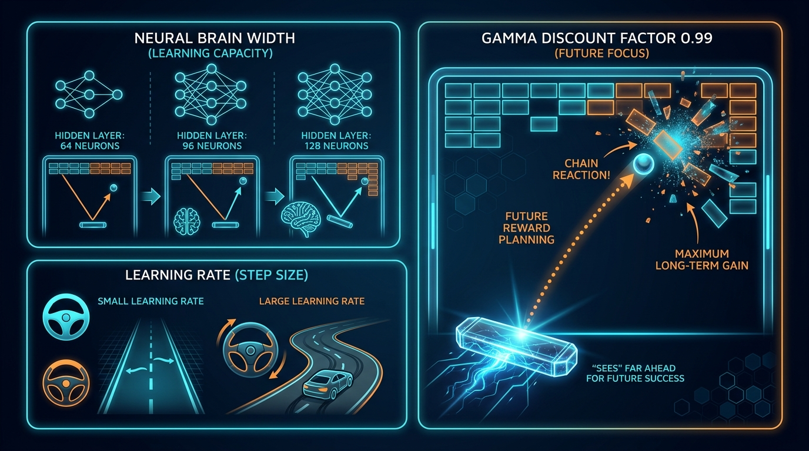

수식 없이 그림 한 장으로 1초 만에 꿰뚫어 보는 3대 핵심 비밀

• 64명 (기본): 전문가는 적당한데 머리가 살짝 단순해서 "공을 가운데로만 받아치는 수직 샷"에 갇혀 36점에 묶였습니다.
• 128명 (과적합): 128명이나 모였는데 20만 걸음이라는 짧은 시간 동안 서로 싸우다가 멍청이가 되었습니다.
• 96명 (황금 체급): 20만 걸음 안에 완벽히 호흡을 맞추며, 판의 모서리로 깎아 쳐서 대각선으로 쏘아 올리는 정밀 각도를 완벽히 계산해 냈습니다!
• 학습률이 크면 (급핸들): 오른쪽 그림처럼 차가 지그재그로 흔들립니다. 공 한 번 놓쳤다고 운전대를 확 꺾어버려서 방금까지 잘하던 기술을 싹 까먹습니다 (망각 현상).
• 학습률 0.0004 (부드러운 조율): 왼쪽 그림처럼 차선을 완벽하게 유지합니다. 모서리 끝 1픽셀 단위의 미세한 손맛을 잃지 않고 차분하게 실력을 누적시킵니다!
• 감마가 낮으면: 지금 눈앞에 보이는 벽돌 1개 깨려고 무리하다가 공을 놓치고 끝납니다.
• 감마가 0.99면: 그림처럼 "지금 당장 벽돌을 못 깨더라도, 공을 패들 끝으로 깎아 쳐서 저 구석 천장 틈새로 쏘아 올린다! 그러면 공이 위쪽에 갇혀서 혼자 벽돌 20개를 싹쓸이 폭파시킨다(Chain Reaction)!"는 100스텝 뒤의 빅픽처를 그리게 됩니다!